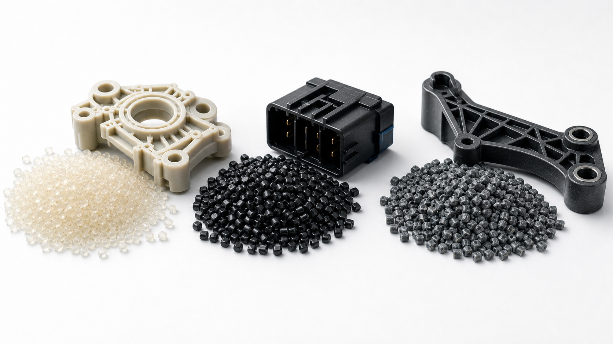
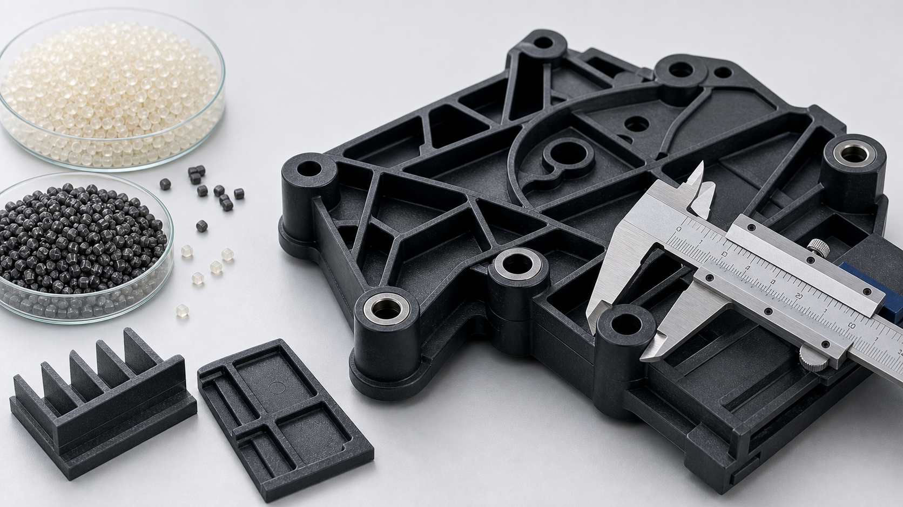

PA6 vs PA66: How to Choose the Right Nylon for Injection-Molded Parts
Compare thermal margin, moisture, strength, processing, factory validation, shipment inspection, and total project cost.
Read the full guideDecision-focused technical guides for buyers, product engineers, distributors, and injection molders evaluating PA66 materials and suppliers.

Compare thermal margin, moisture, strength, processing, factory validation, shipment inspection, and total project cost.
Read the full guideTurn UL 94, thickness, CTI, glow-wire, color, processing, and documentation into a usable procurement specification.
Read the full guide
Troubleshoot warpage, exposed fiber, brittle parts, dimensional drift, short shots, tooling, drying, and shipment controls.
Read the full guide